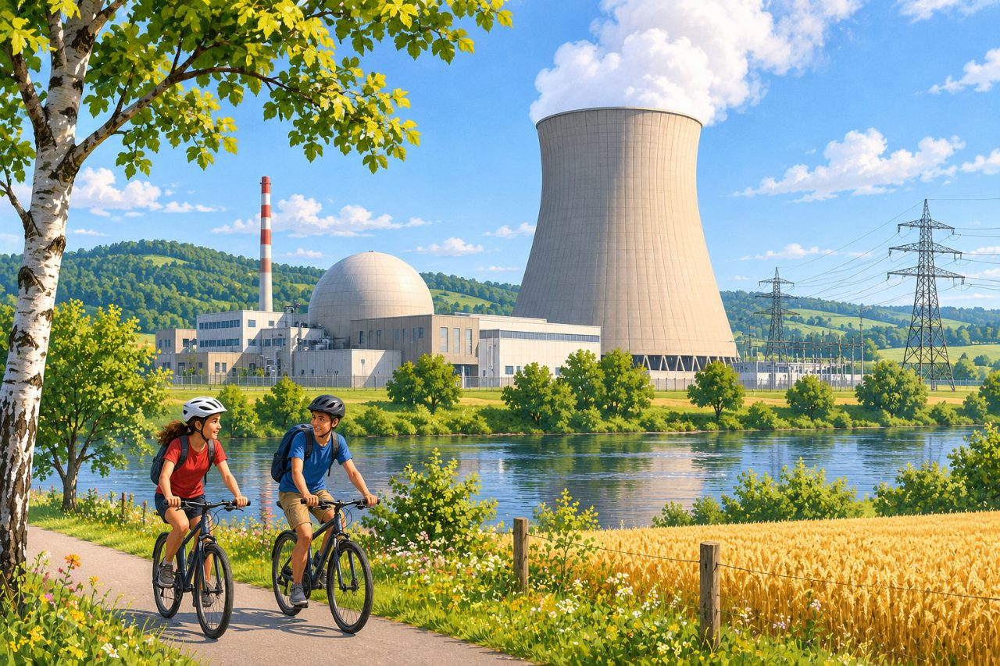
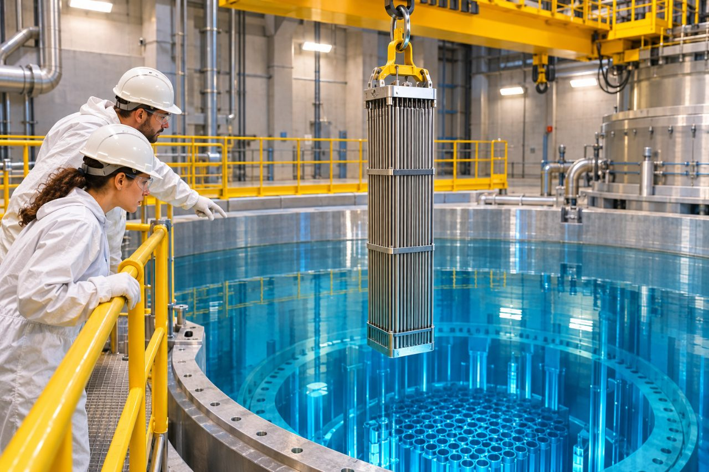

Wie ein Heizkraftwerk – die Energiekette
Von Weitem sieht man zuerst den riesigen mit seiner weißen Wolke. Daneben steht ein Gebäude mit einer runden Kuppel. Darin arbeitet der . So ähnlich sah es bis 2023 an der Isar bei Landshut aus.

Ein arbeitet im Grunde wie ein herkömmliches Heizkraftwerk, zum Beispiel ein Kohlekraftwerk: Eine Wärmequelle macht aus Wasser heißen Dampf. Der Dampf treibt eine an, die Turbine einen – und der erzeugt elektrischen Strom.
Der Unterschied steckt nur in der Wärmequelle. Im Kohlekraftwerk brennt Kohle. Im Kernkraftwerk werden im Reaktor Urankerne gespalten – kontrolliert, also gesteuert. Aus Modul 1 weißt du: Die Energie aus der Kernspaltung wird zu Wärme. Danach wechselt die Energie Schritt für Schritt ihre Form, bis Strom aus der Steckdose kommt.
MERKE
- Ein Kernkraftwerk arbeitet wie ein Heizkraftwerk: Wärme macht Wasser zu Dampf, der Dampf treibt die Turbine, die Turbine treibt den Generator.
- Die Wärmequelle ist der Reaktor. Dort läuft eine kontrollierte Kernspaltung.
- Energiekette: Kernenergie → Wärme → Energie des Dampfes → Bewegungsenergie (Turbine) → elektrische Energie (Generator).
Vom Urankern zur Steckdose
Bringe die Schritte mit den Pfeilen in die richtige Reihenfolge.
Kohlekraftwerk, Kernkraftwerk – oder beide?
Tippe eine Karte an und dann den passenden Bereich.
Der Druckwasserreaktor

Denk mal nach: Am Kran hängt ein Brennelement. Warum liegt der Reaktor beim Beladen tief unter Wasser?
Die meisten deutschen Kernkraftwerke hatten einen – auch Isar 2. Sein Herz ist das (auch Reaktordruckbehälter genannt): ein Behälter aus 20 bis 25 cm dickem Stahl. Darin liegt der Reaktorkern aus etwa 200 . Sie enthalten . Dazwischen stecken die (auch Steuerstäbe genannt) – mehr dazu in Station 3.
Zwischen den Brennelementen fließt Wasser. Es hat zwei Aufgaben: Es bremst die schnellen Neutronen ab – es ist der – und es nimmt die Wärme der Kernspaltung auf.
Drei Wasserkreisläufe. Der erste heißt . Sein Wasser fließt durch den Reaktor und wird bis zu 300 °C heiß. Trotzdem verdampft es nicht, denn es steht unter sehr hohem Druck – daher der Name. Dieses Wasser ist radioaktiv. Im gibt es nur seine Wärme ab. Das Wasser selbst bleibt im im Reaktorgebäude. So kommt kein radioaktives Wasser zur Turbine oder in den Fluss.
Im Dampferzeuger verdampft das Wasser des zweiten Kreislaufs, des . Der Dampf treibt Turbine und Generator an. Im kühlt ihn der dritte Kreislauf ab, der . Der Dampf wird wieder zu Wasser. Das Kühlwasser bringt die Wärme zum Kühlturm. Reaktor und Dampferzeuger stehen im Sicherheitsbehälter.
🔭 Selbst hineinschauen: Auf der AR-Seite kannst du ein Kraftwerk mit den Maßen von Isar 2 drehen und zoomen. Mit „In den Reaktor schauen“ wird der Sicherheitsbehälter durchsichtig: Reaktordruckgefäß, Brennelemente, Regelstäbe und Dampferzeuger – in denselben Farben wie hier.
📱 Kraftwerk in 3D öffnenMERKE
- Im Reaktordruckgefäß (auch Reaktordruckbehälter; Stahl, 20 bis 25 cm dick) stecken etwa 200 Brennelemente mit angereichertem Uran. Dazwischen stecken die Regelstäbe (Steuerstäbe).
- Wasser bremst die Neutronen (Moderator) und nimmt die Wärme auf. Es wird bis 300 °C heiß, verdampft aber wegen des hohen Drucks nicht.
- Drei getrennte Wasserkreisläufe: 1. Primärkreislauf – das Wasser fließt durch den Reaktor und ist radioaktiv. Im Dampferzeuger gibt es nur seine Wärme ab, es bleibt im Sicherheitsbehälter. 2. Sekundärkreislauf: Dampf → Turbine → Generator → Kondensator → zurück. 3. Kühlwasserkreislauf: kühlt den Kondensator und bringt die Wärme zum Kühlturm.
- Reaktor und Dampferzeuger stehen im Sicherheitsbehälter.
Blick in das Reaktorgebäude
Der Druckwasserreaktor
Tippe zuerst auf eine Lücke, dann auf das passende Wort. Zwei Wörter bleiben übrig.
Erkläre in eigenen Worten ✨ KI prüft
Schreibe ganze Sätze oder Stichpunkte. Die KI achtet nur auf den Inhalt, nicht auf die Rechtschreibung.
Regelstäbe steuern die Leistung
Aus Modul 2 kennst du die gesteuerte Kettenreaktion. Im Reaktor muss sie genau im Gleichgewicht bleiben: Soll die gleich bleiben, muss auch die Zahl der Kernspaltungen pro Sekunde gleich bleiben.
Bei jeder Spaltung entstehen 2 oder 3 neue Neutronen. Davon darf nur genau eines eine neue Spaltung auslösen. Die anderen müssen eingefangen werden.
Dafür gibt es die , auch Steuerstäbe genannt. Sie stecken zwischen den Brennelementen und enthalten Bor und Cadmium. Diese Stoffe fangen Neutronen ein.
- Tiefer einfahren → mehr Neutronen werden eingefangen → weniger Spaltungen → weniger Leistung.
- Herausziehen → mehr Spaltungen → mehr Leistung.
- Ganz eingefahren → die Kettenreaktion kommt zum Erliegen. Der Reaktor ist abgeschaltet.
Der Reaktor ist abgeschaltet: Die Regelstäbe sind ganz eingefahren. Zieh sie mit dem Schieberegler heraus oder probiere die Knöpfe aus. Am Ende ist die Tabelle voll.
| Regelstäbe | Spaltungen pro Sekunde | Wassertemperatur | Leistung | Zustand |
|---|
⚠️ Gut zu wissen: Bei Gefahr gibt es eine . Dann fahren alle Regelstäbe in Sekunden ganz in den Reaktorkern. Aber auch ein abgeschalteter Reaktor ist noch heiß: Die Brennelemente geben weiter Wärme ab und müssen gekühlt werden. Fällt die Kühlung lange aus, können sie schmelzen – mehr dazu in Modul 4. Die Zahlen der Simulation sind gerundet; die Temperaturen sind vereinfacht.
MERKE
- Regelstäbe (Steuerstäbe) enthalten Bor und Cadmium. Diese Stoffe fangen Neutronen ein.
- Einfahren → weniger Spaltungen pro Sekunde → weniger Leistung. Herausziehen → mehr Leistung. Ganz eingefahren → Reaktor abgeschaltet.
- Gleichbleibende Leistung: Von den 2 oder 3 neuen Neutronen jeder Spaltung löst genau eines eine neue Spaltung aus.
Mehr oder weniger Leistung?
Tippe eine Karte an und dann den passenden Bereich.
Was stimmt?
Erkläre in eigenen Worten ✨ KI prüft
Schreibe ganze Sätze oder Stichpunkte. Die KI achtet nur auf den Inhalt, nicht auf die Rechtschreibung.
Kernkraftwerke in Deutschland
Isar 2 stand bei Essenbach, ganz in der Nähe von Landshut in Niederbayern, direkt an der Isar. Sein Kühlturm ist 165 m hoch – höher als die Frauenkirche in München (99 m).
Am 15. April 2023 wurde Isar 2 abgeschaltet – zusammen mit Emsland (Niedersachsen) und Neckarwestheim 2 (Baden-Württemberg). Das waren die letzten drei Kernkraftwerke in Deutschland, die noch Strom lieferten.
Warum? Nach dem schweren Unfall im japanischen Fukushima 2011 beschloss Deutschland den : Nach und nach sollten alle Kernkraftwerke vom Netz gehen. Seit dem 15. April 2023 liefert in Deutschland kein Kernkraftwerk mehr Strom.
Die Kraftwerke werden jetzt Stück für Stück abgebaut. Das dauert viele Jahre. In anderen Ländern, zum Beispiel in Frankreich, laufen weiterhin Kernkraftwerke.
Schiebe den Regler bis 2024 oder tippe auf „Abspielen“. Tippe auf einen Punkt in der Karte: Dann erfährst du, welches Kraftwerk dort stand.
MERKE
- Isar 2 bei Essenbach nahe Landshut (Bayern) lieferte bis 2023 Strom. Sein Kühlturm ist 165 m hoch.
- Am 15. April 2023 wurden die letzten drei deutschen Kernkraftwerke abgeschaltet: Isar 2, Emsland und Neckarwestheim 2.
- Seitdem liefert in Deutschland kein Kernkraftwerk mehr Strom (Atomausstieg).
Das Ende der Kernkraftwerke in Deutschland
Tippe zuerst auf eine Lücke, dann auf das passende Wort. Zwei Wörter bleiben übrig.
📱 Das Kraftwerk in echter Größe
Wie groß ist so ein Kraftwerk wirklich? Auf der -Seite steht ein Kernkraftwerk mit den Maßen von Isar 2 vor dir: der Kühlturm (165 m) – höher als die Frauenkirche (99 m), aber niedriger als der Olympiaturm (291 m) –, daneben das Reaktorgebäude mit der Kuppel (etwa 60 m) und das Maschinenhaus.
- Hineinschauen: Mit „In den Reaktor schauen“ werden die Wände durchsichtig. Du siehst Reaktordruckgefäß, Brennelemente, Regelstäbe, Dampferzeuger, Turbine und Generator. Die Regelstäbe kannst du selbst verschieben – es gelten dieselben Regeln wie in der Simulation in Station 3.
- Draußen mit AR: Geh mit dem Tablet nach draußen, tippe auf „AR“ und erlaube Kamera und Bewegungssensor. Dann steht das Kraftwerk in echter Größe 250 m vor dir. Bleib stehen, solange du durch das Tablet schaust, und pass auf andere auf.
- Ohne Kamera: Drinnen oder am Computer läuft die Seite als 3D-Modell zum Drehen und Zoomen.
Training
Löse das Kreuzworträtsel
Tippe in ein Kästchen und schreibe. Tippst du ein Kästchen zweimal an, wechselt die Richtung. Ü schreibst du als UE. Hängst du fest? Bei jeder Frage hilft 💡 Tipp – erst ein Hinweis, dann der Anfangsbuchstabe. Mit 📋 Wörter zeigen siehst du alle Lösungswörter.
Kreuze an
Profi-Check, Lernkarten und Regelheft
So arbeitet ein Kernkraftwerk
Ein Kernkraftwerk (AKW) arbeitet wie ein Heizkraftwerk. Die Wärmequelle ist der Reaktor: Dort läuft eine kontrollierte Kernspaltung.
Energiekette: Kernenergie → Wärme → Energie des Dampfes → Bewegungsenergie (Turbine) → elektrische Energie (Generator)
Druckwasserreaktor: Im Reaktordruckgefäß (auch Reaktordruckbehälter; Stahl, 20–25 cm dick) stecken etwa 200 Brennelemente mit angereichertem Uran. Wasser bremst die Neutronen (Moderator) und nimmt die Wärme auf. Es wird bis 300 °C heiß, verdampft aber wegen des hohen Drucks nicht.
Drei getrennte Wasserkreisläufe: 1. Primärkreislauf: Das Wasser fließt durch den Reaktor und ist radioaktiv. Im Dampferzeuger gibt es nur seine Wärme ab – es bleibt im Sicherheitsbehälter. 2. Sekundärkreislauf: Dampf treibt die Turbine an und wird im Kondensator wieder zu Wasser. 3. Kühlwasserkreislauf: kühlt den Kondensator, bringt die Wärme zum Kühlturm.
Regelstäbe (Steuerstäbe; Bor, Cadmium) fangen Neutronen ein: einfahren → weniger Spaltungen → weniger Leistung; ganz eingefahren → abgeschaltet. Gleichbleibende Leistung: Je Spaltung löst genau ein Neutron eine neue Spaltung aus.
| Isar 2 | bei Landshut an der Isar, Kühlturm 165 m, abgeschaltet am 15. April 2023 |
|---|---|
| seit April 2023 | liefert in Deutschland kein Kernkraftwerk mehr Strom (Atomausstieg) |
Wortspeicher
Alle Fachbegriffe dieses Moduls auf einen Blick.
Wie geht es weiter?
Ein Kernkraftwerk hat viele Sicherungen – trotzdem kam es zu schweren Unfällen. Und wohin mit dem radioaktiven Abfall, der noch Jahrtausende strahlt? In Modul 4 geht es um die Risiken und Folgen der Kernenergie.